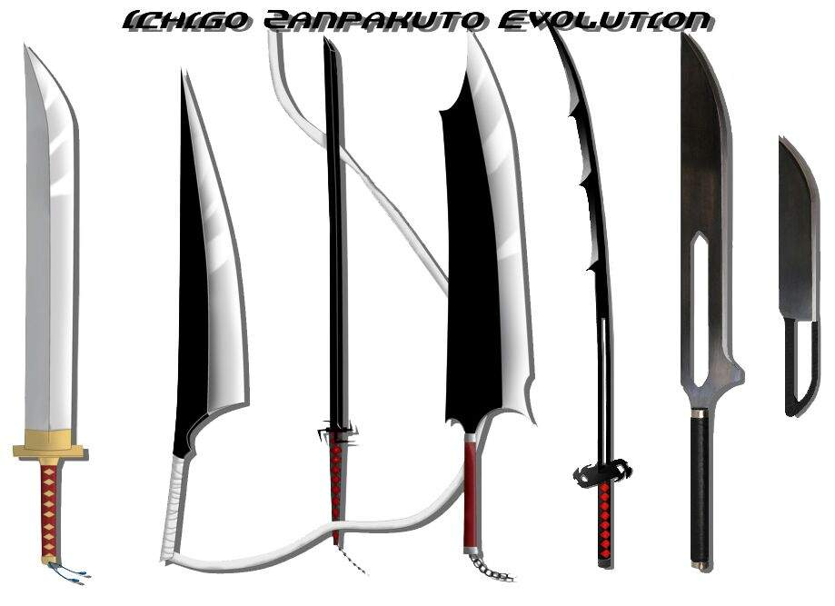
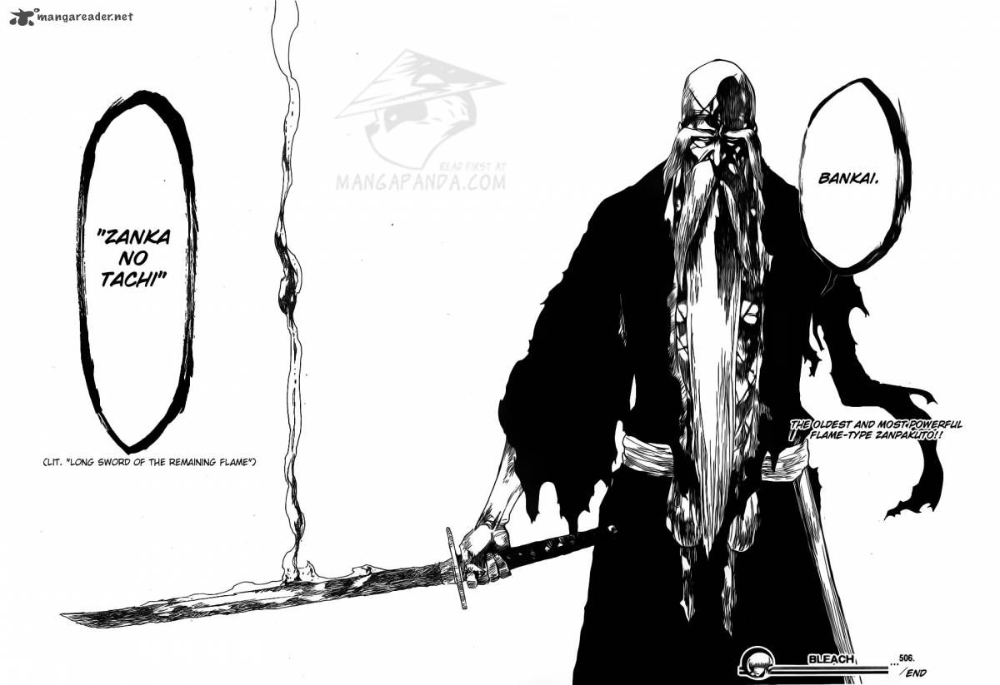
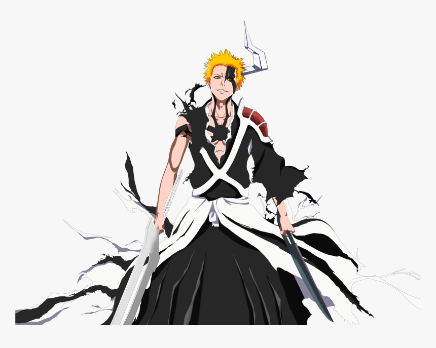
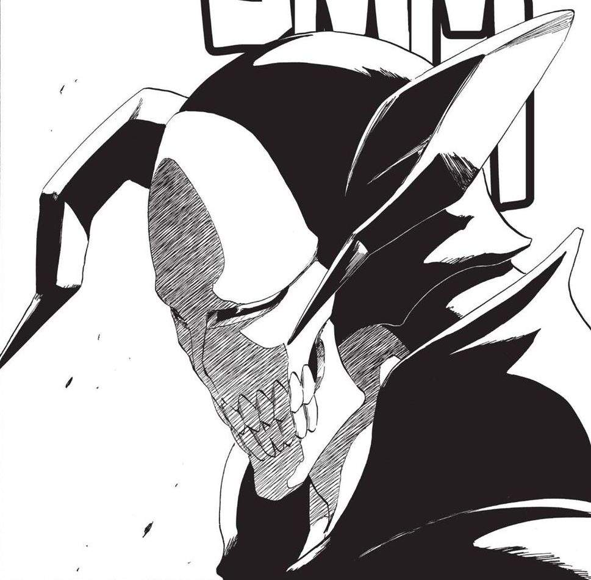

Духовный Меч - основное оружие синигами, арранкаров и вайзардов. Искусство владения духовным мечом, которое практикуют синигами, называется зандзюцу

Банкай — это вторая и последняя стадия высвобождения духовного меча. До того, как Ичибей Хьёсубе дал ей это имя, она была известна

Шикай — это вторая форма духовного меча. Чтобы активировать её, синигами должен знать имя своего меча. Проблема не в том, чтобы выбрать ему имя, у духа оно уже есть. Поэтому синигами должен уметь общаться и ладить со своим мечом. Чтобы узнать имя меча, нужно отправиться в свой внутренний мир и спросить его.Меч изменяет форму и получает особые способности после прочтения его хозяином

Пустые 虚 (ホロウ) [хоро:]"hollow" — «пустой» — существа, в которых превратились души людей, которые, по каким-либо причинам, не отправились в Общество душ после смерти и оставались в мире живых слишком долгое время. Они — падшие души со сверхъестественными способностями, которые пожирают души и живых, и мёртвых людей. Пустые живут в Уэко Мундо, но могут проникать в реальный мир и в Общество душ. Пустые — противоположность людей.[1]